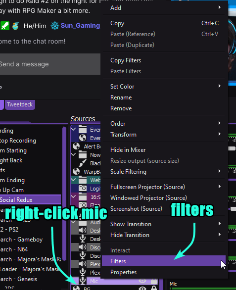
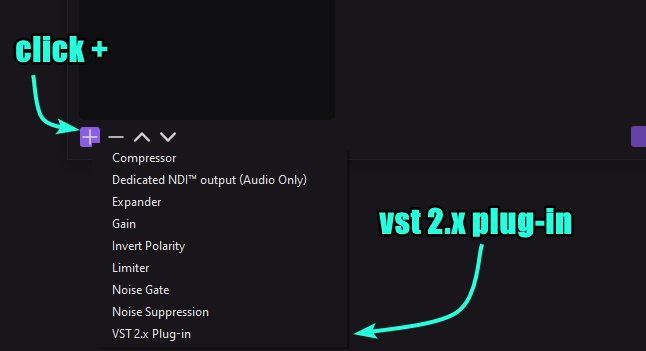
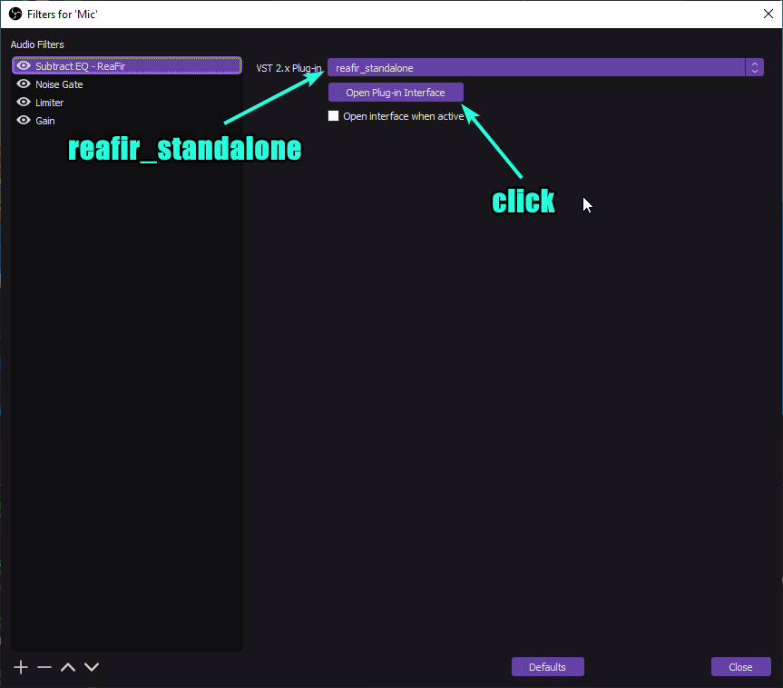

Utilizing Subtract EQ in OBS
Getting Reaper Plugins
Download and install Reaper Plugins (64-bit if you have 64-bit Windows) here: 64-bit 32-bit
Add Reaper Plugin as OBS Filter
Right click mic input in OBS Studio and select Filters
Click the + at the bottom right of the window, add VST 2.x Plug-in
Change dropdown to reafir_standalone and click Open Plug-in Interface
Change Mode to Subtract and click Automatically build noise profile (enable during noise) and let the microphone listen to the background noise for about 5 seconds while staying silent, then click box again.

Now your mic should automatically ignore the background noise!